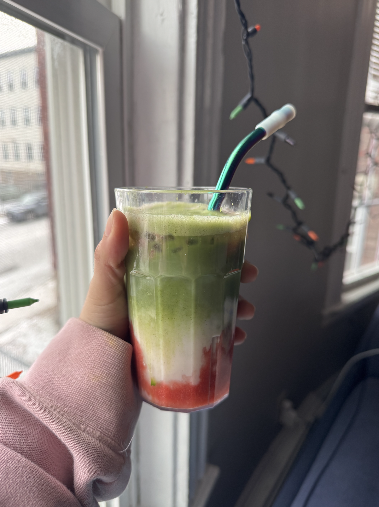
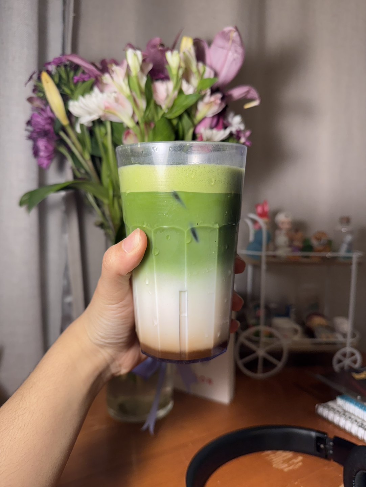

Customizing My Matcha

Making matcha is my favorite daily ritual. Here's my process:
- Sift 1-2 teaspoons of matcha powder to remove clumps.
- Add hot water (around 175°F) and whisk in a zigzag motion until frothy.
- Sweeten with homemade syrups (like vanilla, honey cinnamon, or lavender).
- Mix with milk (dairy or plant-based) for lattes, or water for traditional matcha.
- Pour over ice if making an iced drink and add any flavor twists!
These are a few of my favorite customizations:
- Iced Matcha Latte – smooth and refreshing.
- Strawberry Matcha – sweet and fruity. 
- Chai Matcha – cozy and spiced. 
I create my own syrups to elevate the flavors. Here are a few recipes:
- Vanilla Syrup: water, sugar, and vanilla extract.
- Honey Cinnamon Syrup: honey, cinnamon, and vanilla.
- Lavender Syrup: dried lavender, sugar, and water.
Essential Tools:
- Bamboo Whisk (Chasen)
- Matcha Bowl (Chawan)
- Spoon
- Sifter
Want to start making matcha? Here's my favorite Matcha Making Kit and a great starter matcha powder!